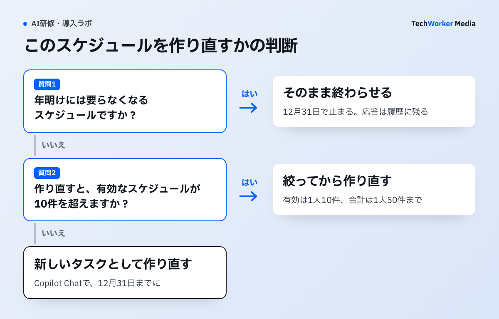
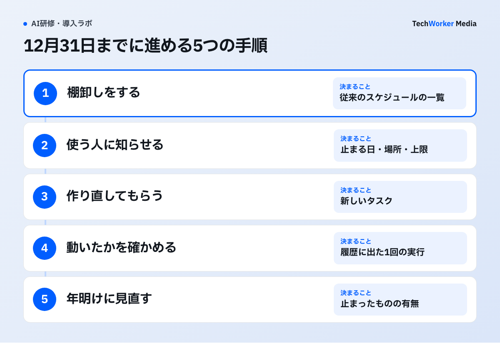

Microsoft 365 Copilotの従来のスケジュールされたプロンプト（Power Platformで動くもの）は、2026年12月31日に廃止されます。
- 利用者がすること：続けたいスケジュールを、12月31日までに新しい「スケジュールされたタスク」として作り直します。
- 上限：新しいタスクは、有効なスケジュールが1人10件、合計が1人50件までです。
- 管理者がすること：公式は管理者の操作を不要としています。ただし利用者が気づかないと、毎朝の要約などが年明けに止まります。使っている人を調べて知らせます。
TeamsのWorkflowsアプリにあるAI Workflowsも、公式は「Copilotのスケジュールされたプロンプト」と説明しています。12月31日の廃止の対象かは書かれていません。公式情報（2026年11月20日確認）をもとに、作り直しの手順と棚卸しをまとめます。
従来のスケジュールされたプロンプトは、いつ、どう変わりますか？
Power Platformで動く従来のスケジュールされたプロンプトが、2026年12月31日に廃止されます。時刻を決めて動かす機能そのものは、Power Platformを使わない「スケジュールされたタスク」として続きます。
スケジュールされたプロンプトは、Copilotへの指示を決めた時刻と頻度で自動で動かす機能です。サポート記事は毎朝の予定の要約や毎週の振り返りを例に挙げています。Microsoftの管理者向けのページは、次のように書いています。
原文“Power Platform scheduled prompts will be retired on December 31, 2026, and will no longer run after that date. Users who want a schedule to remain active must create it again as a new scheduled task before then. Scheduled tasks support up to 10 active and 50 total schedules per user.”
日本語訳Power Platformのスケジュールされたプロンプトは2026年12月31日に廃止され、その日より後は実行されなくなります。スケジュールを有効のままにしたい利用者は、その前に新しいスケジュールされたタスクとして作り直す必要があります。スケジュールされたタスクは、利用者1人あたり有効なスケジュール10件、合計50件までに対応します。
この原文から分かるのは、廃止の日、利用者が作り直す必要があること、新しいタスクの件数の上限の3つです。
同じページは、この変更でデータは失われないとも書いています。以前の実行の応答は利用者のCopilotのチャット履歴に残ります。廃止そのものについて、管理者の操作やポリシーの変更は不要とされています。
名前も変わりました。サポート記事（2026年11月18日更新）では、スケジュールされたプロンプトを「スケジュールされたタスク（Scheduled tasks）」と呼び、タスク ハブ（Task Hub）でまとめて管理します。
従来のものと新しいタスクは何が違いますか？
動く場所、管理者の設定、件数の上限の3つが違います。新しいタスクはPower Platformを使わず、接続エクスペリエンスのポリシーでは制御されません。
| 項目 | 従来のスケジュールされたプロンプト | 新しいスケジュールされたタスク |
|---|---|---|
| 動く場所 | Power Platformの「Microsoft 365」環境 | Power Platformの環境を使わない。データはMicrosoft 365のコンプライアンス境界の中で処理・保存 |
| いつまで | 2026年12月31日に廃止。以後は実行されない | 廃止の予定は記載なし |
| 件数の上限 | 確認した3ページに記載なし | 1人あたり有効10件、合計50件 |
| 管理者が使わせない設定 | クラウド ポリシーの「Office でコネクテッド エクスペリエンスの使用を許可する」を無効にすると、利用者にスケジュールの画面が出なくなる。すでに組まれたものは終わるまで動く | 個別のポリシー設定はない。左のポリシーでも制御されない |
| 管理者の棚卸し | PowerShellのスクリプトで一覧にできる | 公式は、この棚卸しは新しいタスクには使わないと書く |
| 使える人 | Copilotのライセンスを持つ利用者 | Copilotのライセンスを持つ利用者 |
出典：Microsoft Learn「Manage scheduled prompts for Microsoft Copilot」（2026年11月11日更新）、「Inventory for scheduled prompts」「Microsoft 365 environment for scheduled prompts」。2026年11月20日確認
従来のものは、テナントに1つ自動で作られる「Microsoft 365」という名前のPower Platformの環境で動きます。この環境には固定のDLPポリシーがあり、テナントや環境のDLPポリシーは当てはまりません。新しいタスクはこの環境を作らず、使いません。
Copilotのライセンスの料金はMicrosoft 365 Copilotの法人料金と契約にまとめています。Copilotを含む主要4社の料金比較表と、稟議書・社内利用ルールの雛形は、下の枠から受け取れます。
利用者は、どう作り直しますか？
Copilot Chatで、続けたい指示を新しいスケジュールされたタスクとして作ります。有効にできるのは1人10件までなので、先に残すものを選びます。

従来のものはTeams、Office.comのチャット、Outlookで使えました。サポート記事では、新しいタスクを作れるのはCopilot Chatと、Web版・デスクトップ版のMicrosoft Copilotです。Teams、Outlook、モバイルは、この初期リリースに含まれていません。TeamsやOutlookで作っていた人は、作り直す場所が変わります。
- Copilot Chatを開き、Microsoft 365のアカウントでサインインします。
- 続けたい指示（プロンプト）にマウスを合わせ、「これをスケジュールする（Schedule this）」を選びます。タスク ハブから作ることもできます。
- 動かす時刻と頻度を選び、保存します。
- 左のサイドバーのタスクのアイコンから「スケジュール済み」のタブを開き、作ったタスクが一覧にあるかを確かめます。
一覧では、今すぐ実行、スケジュールの編集、一時停止、削除ができます。一時停止したタスクは有効でない（Inactive）側に移ります。
ここからはTechWorkerの整理です。上限は有効10件・合計50件です。従来のスケジュールを11件以上動かしている人は、すべてを有効にはできません。次の順で残すものを決めます。
- 年明けも要るスケジュールだけを選びます。
- 同じ時刻に動く似た指示は、1つの指示にまとめます。
- たまにしか使わないものは、一時停止にして合計50件の中に置きます。
Microsoft Learnには、スケジュールされたプロンプトはMicrosoft CopilotのWork IQのタブでだけ使えるという注記もあります。作る画面が見つからないときは、Work IQのタブを開いているかを確かめます。
だれが従来のものを使っているかは、どう調べますか？
Power Platform 管理者の役割で、Microsoftが公開しているPowerShellのスクリプトを動かすと、「Microsoft 365」環境にある従来のスケジュールの一覧をCSVに出せます。
Microsoftは、廃止の日より前にこの棚卸しを使い、従来のスケジュールを持つ利用者を見つけて知らせることができると書いています。要るものは次のとおりです。
| 項目 | 内容 |
|---|---|
| 役割 | Power Platform 管理者。加えて、「Microsoft 365」環境のシステム管理者の役割 |
| 道具 | PowerShell 7.0以降。Az.AccountsとMicrosoft.PowerApps.Administration.PowerShellのモジュール |
| スクリプト | 棚卸しに使うのはGet-CopilotActions.ps1（一覧）。同じページのRemove-CopilotActions.ps1とClear-CopilotActions.ps1は、スケジュールを削除するスクリプト |
| 一覧の出し方 | テナント全体か、利用者1人を指定。Export-CsvでCSVに保存できる |
| 2027年1月1日から | スケジュールされたタスクは、この一覧に出ない |
出典：Microsoft Learn「Inventory for scheduled prompts」（2026年11月20日確認）
進め方は4つの段です。
- Power Platform 管理センターで「Microsoft 365」環境を開き、Membershipから自分にシステム管理者の役割を足します。反映に30分ほどかかることがあります。
- 公式ページのスクリプトを同じフォルダに保存し、Connect-AzAccountでサインインします。
- Get-AdminPowerAppEnvironment 'Microsoft 365' で、環境のIDを調べます。環境の名前はテナントによって違うことがあります。
- Get-CopilotActions.ps1に-EnvironmentIdで環境のIDを渡して一覧を出し、Export-CsvでCSVに保存します。
公式は権限の小さい役割を使うよう勧めています。全体管理者は緊急の場合に限ります。削除のスクリプトは元に戻せないため、棚卸しだけならGet-CopilotActions.ps1だけを使います。公式ページでは削除のスクリプトの名前の書き方が、見出し（Remove-CopilotActions.ps1）と実行の例（Remove-CopilotAction.ps1）でそろっていません。スクリプトの実行はTechWorkerの環境では確かめていません。
パブリックプレビューの間に作られたスケジュールは、Copilotの一覧に出ません。公式はPower Automateで表示と管理をすると書いています。この分が棚卸しの一覧に出るかは、公式に書かれていません。Power Automateでも見ておきます。
管理者は、新しいタスクを止められますか？
新しいスケジュールされたタスクには、個別のポリシー設定がありません。Copilotのライセンスを持つすべての利用者が使えます。
原文“Scheduled tasks are not a connected experience and are not controlled by the Allow the use of connected experiences in Office policy setting.”
日本語訳スケジュールされたタスクは接続エクスペリエンスではなく、「Office でコネクテッド エクスペリエンスの使用を許可する」ポリシー設定では制御されません。
これまで、クラウド ポリシーで接続エクスペリエンスを無効にして、スケジュールされたプロンプトを止めていた会社は注意が要ります。新しいタスクは、その設定では制御されません。
従来のものについても、確かめておく動きがあります。接続エクスペリエンスを無効にすると、利用者はスケジュールの画面を見られなくなります。それでも、すでに組まれたスケジュールは終わるまで動き続けます。止めたつもりで動いているものがないかは、棚卸しの一覧で確かめます。
新しいタスクを使わせる範囲は、Copilotのライセンスを割り当てる人で決まります。利用の決まりは社内ルールに書きます。エージェントに仕事を任せるCoworkの設定は「Copilot Coworkとは」で扱っています。
TeamsのAI Workflowsとは何で、どう扱いますか？
TeamsのWorkflowsアプリの中にある、Copilotのスケジュールされたプロンプトを使うテンプレートです。Workflowsアプリを有効にしていなければ、既定ではオフです。
Microsoft 365 Copilotのリリースノートは、2026年11月4日の項で次のように書いています。見出しの対象はWindowsとMacです。2025年の通知（MC1147389）は、WebとMacと書いていました。
原文“Admins control access through Teams app management settings, and AI Workflows are off by default unless the Workflows app is enabled.”
日本語訳管理者はTeamsのアプリ管理の設定でアクセスを制御します。AI Workflowsは、Workflowsアプリが有効になっていない限り、既定でオフです。
AI Workflowsは、利用者がテンプレートを選んで組む自動の処理です。Teamsの公式ブログ（2025年9月）は、テンプレートの例を挙げています。
- Help Me Prepare for My Day：直近のチャットとメールを見て、毎朝その日の予定と残っている仕事をTeamsにまとめます。
- Summarize Key Takeaways：Teamsの会話から、決まったこと、やること、止まっていることをまとめます。
- Recurring Prompts for your channel's agent：チャネルのエージェントへの指示を、決めた間隔でくり返します。
使えるのは、Microsoft 365 Copilotのライセンスを持つ利用者です。Workflowsアプリの一覧ではふつうのワークフローとAI workflowsの表示を切り替えられます。
管理者が確かめたい3つの点は、公式の情報だけでは決まりません。
| 確かめたい点 | 公式の書き方（2026年11月20日確認） | こちらで確かめること |
|---|---|---|
| Workflowsアプリの今の状態 | Teamsのアプリ管理のページに、Workflowsアプリ個別の既定の状態は書かれていない | Teams 管理センターのアプリの管理で、Workflowsが許可かブロックかを見る |
| 12月31日より後も動くか | AI Workflowsが従来の仕組みと新しい仕組みのどちらで動くかは書かれていない | 使っている人に、年明けに動いたかを確かめてもらう |
| 止める設定 | 2025年のメッセージ センターの通知（MC1147389、掲載の期限は切れている）は「オプションの接続エクスペリエンス」のポリシーを挙げる。Learn（2026年11月）は、新しいタスクが接続エクスペリエンスのポリシーで制御されないと書く。AI Workflowsがどちらに当たるかは記載なし | 確実に止めたい場合は、Workflowsアプリを使える人の範囲で決める |
出典：Microsoft Learn「Microsoft 365 Copilot release notes」「Manage scheduled prompts for Microsoft Copilot」「Manage your apps in the Microsoft Teams admin center」。MC1147389は公式の通知の写しで確認
Teams 管理センターのアプリの管理では、アプリを許可・ブロックでき、使える人を全員、特定の利用者やグループ、なしから選べます。Power Automateの公式ページは、Workflowsアプリの中でフローを作る機能には、Teams 管理センターでアプリを有効にすることが要ると書いています。ブロックすると、AI Workflowsだけでなく、アプリの中で作るふつうのワークフローにも影響すると考えられます。すでに作ったフローが動き続けるかは、公式に書かれていません。止める前に、使っている部署を確かめます。
名前が似た「Workflows agent」は、Copilotの中のエージェントです。Frontier（早期の試用）の参加者向けで、Microsoft 365 管理センターのCopilot ＞ Agentsで管理します。公式はTeamsのWorkflowsアプリのAI Workflowsと同じものか別のものかを書いていません。管理する場所は別です。
社内には、どう知らせますか？
棚卸しで見つけた利用者に、止まる日、作り直す場所、件数の上限の3つを知らせます。
次の文例はTechWorkerが作ったものです。［ ］の中を自社に合わせて直して使えます。
Copilotで時刻を決めて動かしている指示（スケジュールされたプロンプト）は、2026年12月31日で止まります。年明けも使うものは、［12月18日］までに作り直してください。
作り直す場所：Copilot Chatで指示にマウスを合わせ、「これをスケジュールする」を選びます。
上限：有効にできるのは1人10件、合計は50件までです。
これまでの結果：Copilotのチャット履歴に残ります。
困ったとき：［情シスの窓口］へ連絡してください。
知らせる相手は、棚卸しの一覧に名前がある人です。一覧を出せない場合は、Copilotのライセンスを持つ全員に同じ文を送ります。
12月31日まで、どの順で進めますか？
棚卸し、知らせ、作り直し、確かめの順に進め、年末の休みの前に終えます。

日付はTechWorkerの提案です。自社の年末の休みに合わせて前に寄せます。
- 棚卸しをする（11月27日まで）：PowerShellで従来のスケジュールの一覧をCSVに出します。
- 使う人に知らせる（12月4日まで）：止まる日、作り直す場所、上限を伝えます。
- 作り直してもらう（12月18日まで）：利用者がCopilot Chatで新しいタスクを作ります。
- 動いたかを確かめる（12月24日まで）：新しいタスクが1回動いたことを、利用者が履歴で見ます。
- 年明けに見直す（1月の最初の週）：止まったものが無いかと、TeamsのAI Workflowsが動いているかを聞きます。
Teamsの担当者は同じ期間にWorkflowsアプリの状態を見ておきます。
よくある質問
消えません。公式は、この変更でデータは失われず、以前の実行の応答は利用者のCopilotのチャット履歴に残ると書いています。止まるのは、従来のスケジュールの実行です。
公式は、続けたい利用者が期日までに新しいスケジュールされたタスクとして作り直す必要があると書いています。自動で移すという記載は確認したページにありません。
サポート記事（2026年11月18日更新）では、作れるのはCopilot Chatと、Web版・デスクトップ版のMicrosoft Copilotです。Teams、Outlook、モバイルはこの初期リリースに含まれていません。
Copilotのスケジュールの一覧には出ません。公式はPower Automateで表示と管理をすると書いています。2026年12月31日より前に期限が切れるまで、Power Automateで動き続けます。
確認した公式ページに記載がありません。AI Workflowsが従来の仕組みと新しい仕組みのどちらで動くかも書かれていません。Copilot Chatで結果を見れば足りる指示は、新しいタスクでも作っておくことをTechWorkerは勧めます。
次の一歩は何から始めればよいですか？
従来のスケジュールを使っている人の一覧を出すことから始めます。
- Power Platform 管理者の役割で、棚卸しのスクリプトを動かし、CSVに出します。
- 一覧の利用者に、文例を直して知らせます。
- Teams 管理センターで、Workflowsアプリが許可かブロックかを見ます。
TechWorkerではCopilotの研修を、受講者の実際の業務1本から組みます。教材は公式の変更に合わせて毎週見直し、30日後に、使った人の割合と1件の時間を測って報告します。検討段階のご相談だけでも歓迎です。
出典と確認範囲
確認日：2026年11月20日。管理画面の実際の表示と、棚卸しのスクリプトの実行はTechWorkerの環境では確かめていません。TeamsのAI Workflowsが従来の仕組みと新しい仕組みのどちらで動くか、12月31日より後も動くか、Workflowsアプリ個別の既定の状態は、確認した公式ページに記載がありません。AI Workflowsの対応環境は、リリースノートがWindowsとMac、2025年の通知（MC1147389）がWebとMacと書いており、そろっていません。MC1147389は公式のメッセージ センターの写し（非公式の保存サイト）で読みました。残すスケジュールの選び方、社内向けの文例、進める日付はTechWorkerの提案です。機能と条件は変わるため、設定の時点で公式情報を確認してください。
- Microsoft Learn「Manage scheduled prompts for Microsoft Copilot」（2026年11月11日更新）
- Microsoft Learn「Inventory for scheduled prompts」
- Microsoft Learn「Microsoft 365 environment for scheduled prompts」
- Microsoft サポート「Updates to Scheduled Prompts in Copilot Chat」（2026年11月18日更新）
- Microsoft Learn「Microsoft 365 Copilot release notes」（2026年11月4日の項）
- Microsoft サポート「Get started with the Workflows app in Microsoft Teams」
- Microsoft Learn「Create flows in Microsoft Teams」（Known issuesの節）
- Microsoft Learn「Manage your apps in the Microsoft Teams admin center」
- Microsoft Learn「App centric management to manage user access to Teams apps」
- Microsoft Teams Blog「AI and Microsoft Teams: A New Era of Collaboration」（2025年9月18日）
- Microsoft サポート「Get started with Workflows in Microsoft Copilot」
- Microsoft 365 メッセージ センター MC1147389（2025年10月17日更新、保存サイトの写し）